Itayanagi
Itayanagi · Aomori
Itayanagi
Highlighted on the Aomori map.
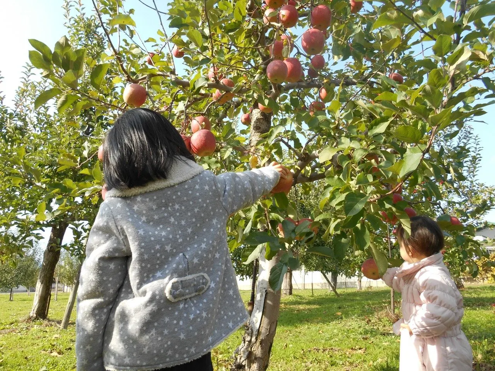
Stay
板柳町ふるさとセンター ファミリーコテージ
Itayanagi Furusato Center Family Cottages
Hiba-wood cottages in Itayanagi, Aomori.
Dining
兜家
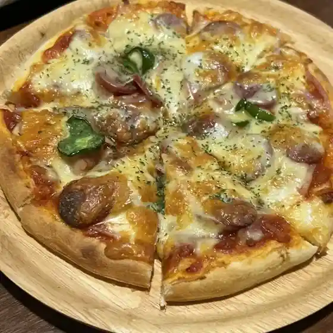
Kabuto Ie
どんぐり食堂
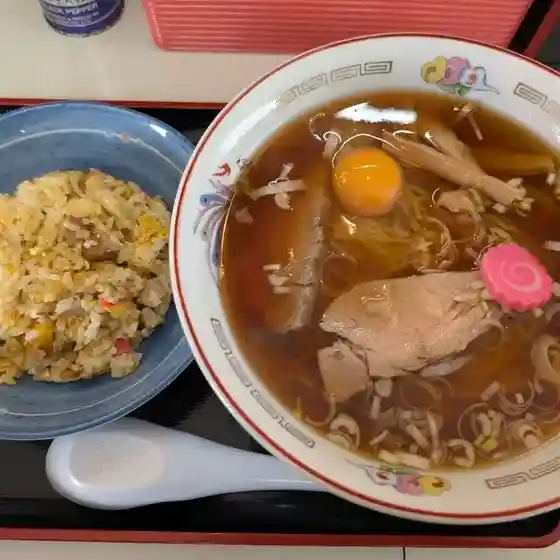
Donguri Shokudou
食樂家光樂
Shoku Gakuke Hikari Raku
松竹
Shouchiku
幡龍
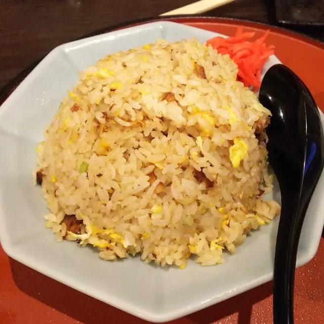
Hanryuu
都寿司
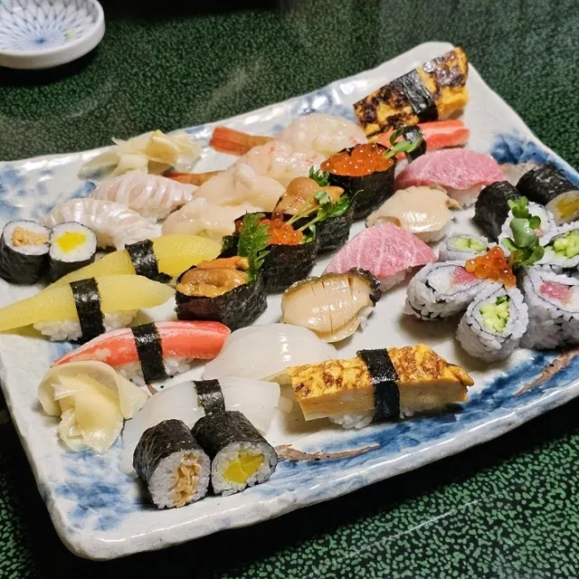
Miyako Sushi
いちのへ菓子舗
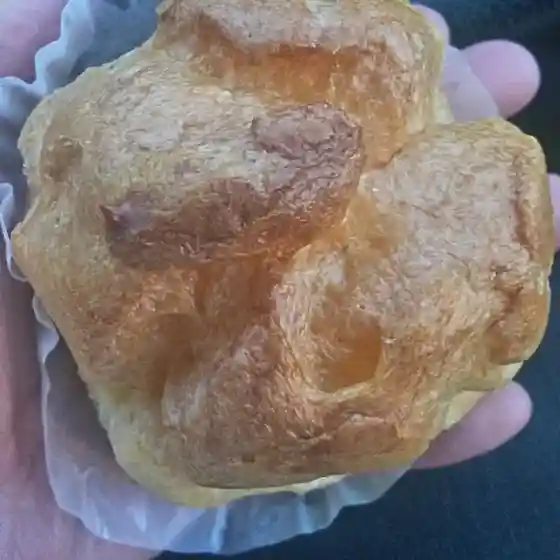
Ichinohe Kashi Ho
柿崎菓子店
Kakizaki Kashi Mise
なにわ食事処
Naniwa Shokuji Tokoro
居酒屋たっちゃん
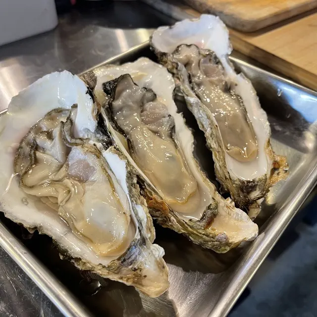
Izakaya Tatchan
ビアキッチンさとよし
Biakitchin Satoyoshi
北の翔
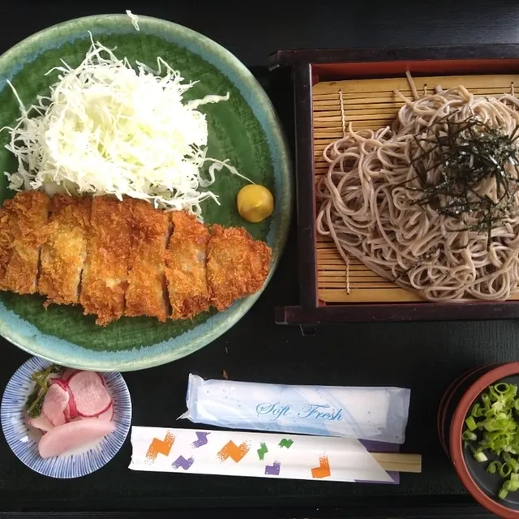
Kita No Shou
とれたて市
Toretate Shi
松鶴
Shoukaku
富士食堂
Fuji Shokudou
セブンイレブン 板柳辻店
Sebun'Irebun Itayanagi Tsuji Mise
高増食堂
Taka Zou Shokudou
SIP HOK THAI CAFE
Sip Hok Thai Cafe
リンゴワーク
Ringowaaku
炭火ビストロ ○吉
Sumibi Bisutoro ○ Kichi
りんご菓子工房
Ringo Kashi Koubou
ふくや菓子店
Fukuya Kashi Mise
ブロッサム
Burossamu
大福食堂
Daifuku Shokudou
Sights
Itayanagi Town Furusato Center
'Itayanagi Furusato Center is an apple village where you can 'learn, play, and stay'.
Takamasu Onsen Fudonoyu
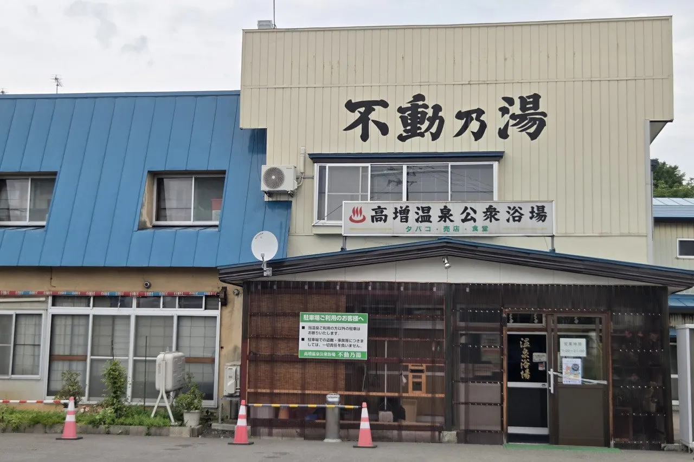
Local hot spring with a shop-like front desk and family baths, including a single-person rate.
Seiryukan Furusato Onsen
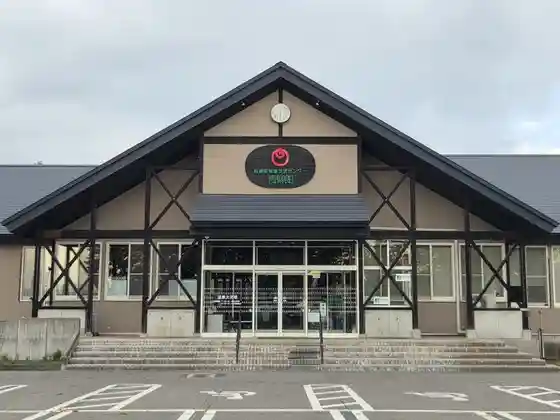
Hot spring with a spacious main bath, plentiful water and a kids' space in the lobby.
Kaido Shrine
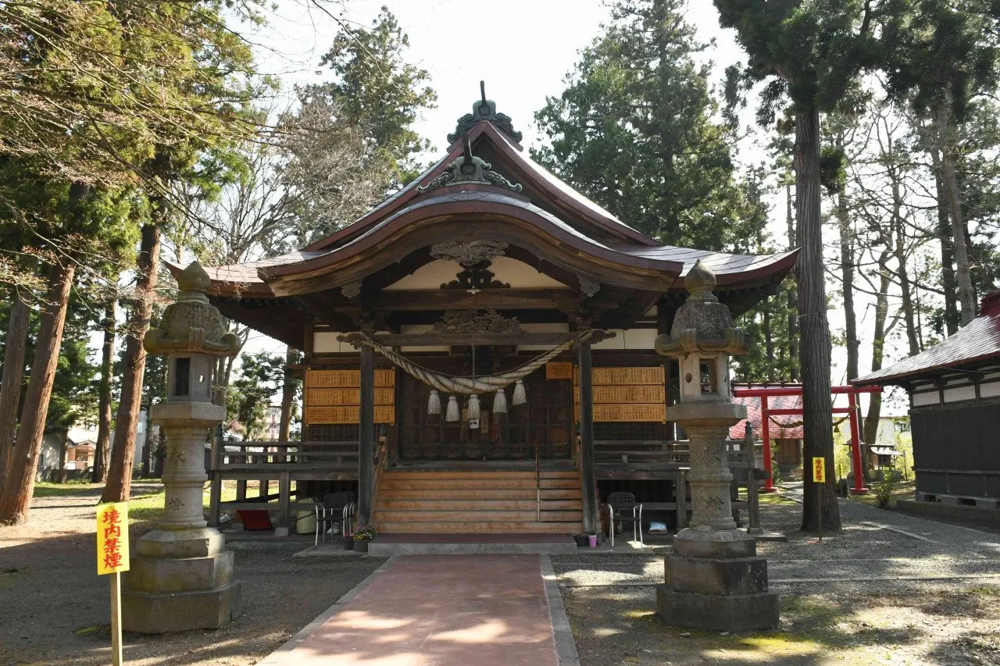
Shrine founded in 1593 by Tsugaru Tamenobu to pray for safety at sea and prosperity.
Itayanagi Town Folk Museum
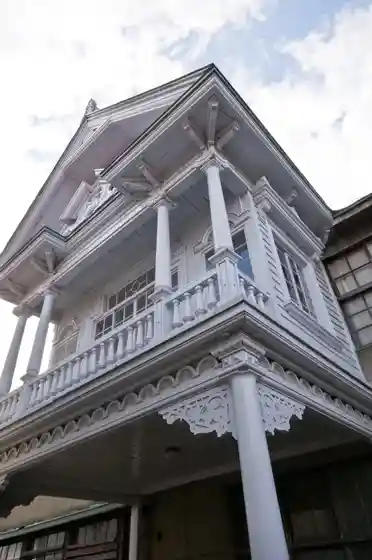
Folk museum in a former junior high school displaying everyday tools of Tsugaru life from the Meiji to Showa eras.
Takamasu Shrine
Shrine founded around 1928 after mysterious events at an apple grower's garden.
Fukami Hachimangu Shrine
Shrine linked to the Ishida family, in the area where Ishida Mitsunari's second son lived in hiding after Sekigahara.